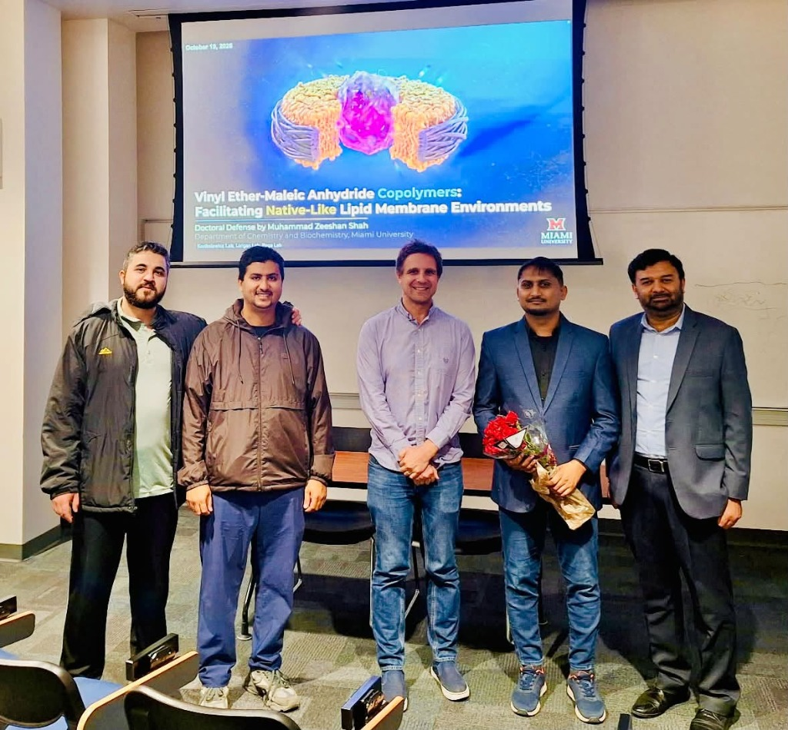

Biography & Scientific Trajectory
Muhammad Zeeshan Shah is a Biomaterials and Polymer Scientist in the Department of Chemistry and Biochemistry at Miami University (Oxford, OH) with 7+ years of total research experience (5+ years of doctoral research at Miami University plus 2 years of M.S. research) engineering liposomal, lipid-based, and polymeric nanoparticle systems, bioconjugated copolymers, and antiviral/biomimetic lipid assemblies.
Working at the interface of synthetic macromolecular chemistry and membrane biophysics across the laboratories of Prof. Dominik Konkolewicz and Prof. Rick Page (in close collaboration with Prof. Gary Lorigan), Shah pioneered alternating and block vinyl ether–maleic anhydride (VEMA) copolymers as a versatile, UV-transparent platform for self-assembled lipid nanodiscs (VEMALPs) and membrane protein stabilization (Biomacromolecules 2024; Polymer Chemistry 2026).
By combining controlled RAFT polymerization (screening small-molecule CTAs iBADTC, PADTC, EtPAX, and PAETC) with post-polymerization nucleophilic ring-opening bioconjugation using polyethylene glycol (PEG) chains, amino acids, and cationic/anionic/zwitterionic modifiers, he developed 9 distinct charge-tunable VEMA derivatives (VEMADs) that resist aggregation across pH 3.0–9.0 and up to 30 mM Mg2+. He also engineered a special class of aliphatic VEMA copolymers that spontaneously self-assemble with phospholipid bilayers in under 60 seconds without organic co-solvents or mechanical shear.
His scientific leadership spans 9 peer-reviewed publications (including Biomacromolecules, Polymer Chemistry, ACS Macro Letters, Polymer, BBA - Biomembranes, Biophysical Chemistry, Chemistry and Physics of Lipids, and Analytical Biochemistry).
Education
-
Ph.D. in Chemistry (Polymer Science, Biomaterials & Lipid Nanoparticle Engineering) | Miami University, Oxford, OH | Oct 2026 (Defense: Oct 19, 2026)
Dissertation: "Vinyl Ether-Maleic Anhydride Copolymers Facilitating Native-Like Lipid Membrane Environments"
Advisors: Prof. Dominik Konkolewicz & Prof. Rick Page (in collaboration with Prof. Gary Lorigan) - M.S. in Material Chemistry | Miami University, Oxford, OH | 2023
-
M.S. in Physical Chemistry | Government College University, Faisalabad | 2017
Advisor: Dr. Munir — Radiolytic degradation kinetics via Gamma Irradiation & amphiphilic copolymer formulations for aqueous contaminant sequestration.
Multi-Lab Collaborations & Mentorship of 13 Researchers
11 Undergraduates • 2 Graduate Students • 5+ Co-Authored ManuscriptsThroughout his doctoral tenure at Konkolewicz lab Miami research fund and NIH-funded grants, Muhammad Zeeshan Shah has coordinated experimental milestones across synthetic polymer chemistry, structural biology, and EPR membrane biophysics laboratories, while managing chemical inventory, procurement, instrument maintenance, and laboratory SOPs.
Principal Advisors & Collaborating Laboratories
- Prof. Dominik Konkolewicz Lab (Miami University) — Controlled RAFT Polymerization, Macromolecular Engineering, Bioconjugation & Dynamic Networks
- Prof. Rick Page Lab (Miami University) — Structural Biology, Protein Expression & Biomolecular Characterization
- Prof. Gary A. Lorigan Lab (Miami University) — Membrane Biophysics, Site-Directed Spin Labeling CW-EPR, Solid-State NMR & Proteoliposomes
- Dr. Munir Lab (GCU Faisalabad) — Radiation & Physical Polymer Chemistry
Lead Research Mentor (13 Junior Researchers)
Directly trained and supervised 11 undergraduate researchers and 2 graduate students (2022–Present) in RAFT synthesis, PEG/amino-acid bioconjugation, liposome/nanodisc formulation, and NMR/GPC/DLS analysis, resulting in 5+ co-authored manuscripts:
Scientific Leadership, Teaching & Honors
ACS POLY/PMSE PresidentLeadership & Academic Service
- President | ACS POLY/PMSE Cincinnati Chapter (2024–2025): Spearheaded cross-institutional symposia, poster judging, and industrial-academic networking initiatives; previously served as Treasurer (2022–2023).
- Poster Judge & PMSE Division Representative: ACS Fall 2025 National Meeting, Washington, DC (Aug 2025).
- Peer Reviewer: Journal on Excellence in College Teaching (2023–Present).
- Graduate Teaching Assistant (Miami University, 2021–2023): Instructed laboratory and recitation sections for Organic Chemistry I & II (CHM 244/245) and General Chemistry I & II (CHM 144/145).
- Assistant Education Officer (Punjab School Education Dept., 2017–2020): Directed multi-institutional operations, budget/inventory auditing, personnel evaluation, and STEM curriculum implementation.
Honors, Fellowships & Awards
- Best Presenter Award | American Chemical Society (ACS) Southwest Ohio Chapter Symposium (Oct 2024)
- Graduate Research Fellowship (2x Recipient) | Miami University (May 2022 & May 2023)
- Competitive Graduate Travel Awards (3x Recipient) | ACS Fall 2025 (Washington, DC), SMALPs Conference 2023 (Knoxville, TN), and ACS Spring 2023 (Indianapolis, IN)
Ph.D. Dissertation Defense
Title: "Vinyl Ether-Maleic Anhydride Copolymers Facilitating Native-Like Lipid Membrane Environments"
Defense Date: Monday, October 19, 2026
Location: Pearson Hall 116, Department of Chemistry and Biochemistry, Miami University, Oxford, OH
Muhammad Zeeshan Shah successfully defended his Ph.D. dissertation establishing the synthetic rules, block copolymer extensions, modular PEG/amino-acid/charge-tunable bioconjugations (VEMADs), and rapid (<60 s) special class of aliphatic VEMA formulations that enable detergent-free extraction and native-like stabilization of membrane proteins.
